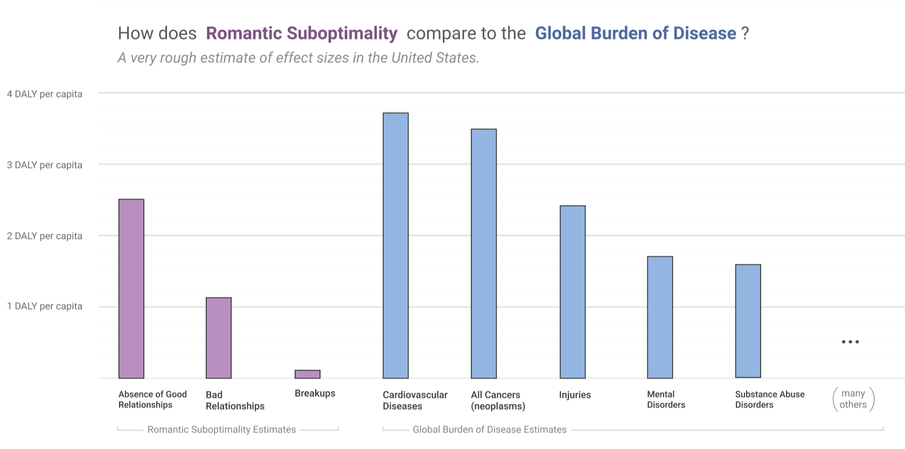
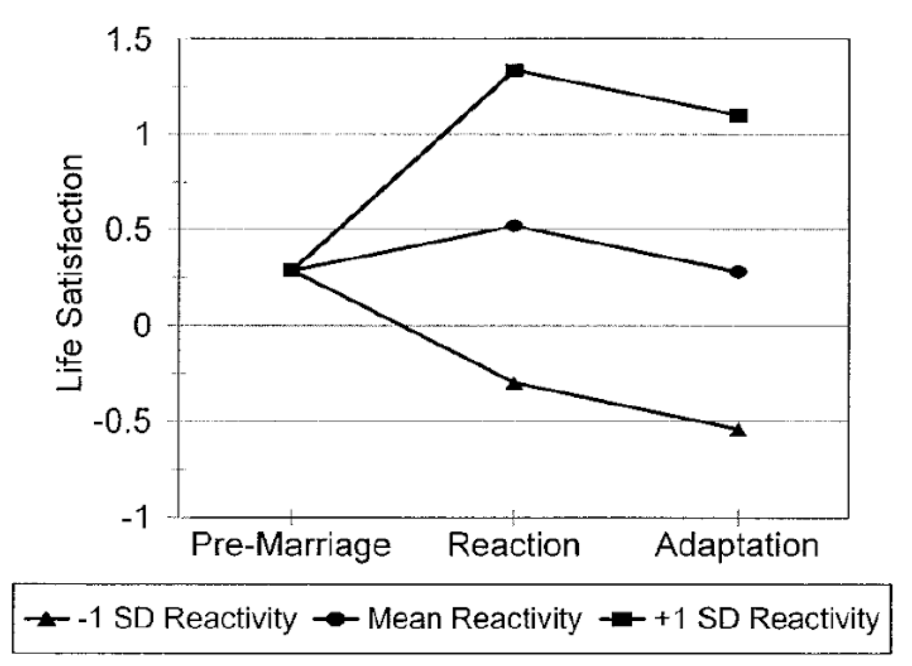

I worry there's a lack of moral seriousness around romantic suffering.
When someone suffers due to a disease, we rightly go to great lengths to help them.
But when someone experiences romantic suffering, we give them ice cream and a dating app.
It's a part of life, after all, and if someone stays wound up over it for too long, perhaps they're being a bit juvenile.
Well, I think the suffering of the men and women going through romantic hardship is real and significant.
Everyone enduring quiet loneliness,
those suffering through painful breakups,
and the people trapped in unhealthy relationships
— I think it adds up to something really substantial.
In fact, my best estimate is that, within the United States,
it's a problem of comparable size to major public health issues:

Before going on, I wish to make one thing crystal clear:
in suggesting that romantic suffering may be a problem that society should take seriously,
I am absolutely not saying that anyone is entitled to a relationship from anyone else.
I think that anyone being in a relationship they do not wish to be in is abhorrent.
What I would like if this turns out to really be important, is for us as a society to find better ways to help people find excellent relationships they enthusiastically wish to be in
— and when the sad necessity arises, to help them leave relationships that are no longer healthy for them.
The goal of this essay is simply to make a plausibility argument for the importance and promisingness of romantic suboptimality as a cause.
It's based both on synthesizing some of the existing academic literature and on small experiments I ran myself.
I do not think anything in here is definitive -- it's only intended a preliminary argument suggesting further research.
That said, my personal suspicion is that, weighted by the number of people working on it, this may be one of the most important problems in the developed world.
I've broadly structured this essay in the form of the Importance, Tractability and Neglectedness framework:
How much harm does romantic suboptimality cause?
Several dubious models give wildly varying estimates.
Are there ways we might reduce romantic suffering at scale?
How effective do we think they'd be?
A number of other actors already work on romance.
I think it’s still neglected due to their focus, alignment, and scale.
Epistemic Transparency
I wrote this essay because I suspect romantic suboptimality is a very important and neglected cause.
A lot of this intuition comes from my own quality of life being massively increased while in relationships with the people I've been lucky enough to date.
I suspect I'm an outlier in just how much it effects me and consider myself biased.
At the same time, a major concern for me in writing this essay has been being effect by that bias, and I've tried very hard to err on the side of conservative estimates.
It's possible that I've overcompensated.
I really don't have relevant expertise in this kind of work, and expect I'm making all sorts of mistakes.
I'm also trying to cover a lot of ground in a small side project, so in a lot of cases I had to make really cursory estimates and move on.
Despite all this, I felt like it was still worth writing my thoughts up, since it could help start a conversation and might trigger more analysis.
Part 1: Importance
This section aims to provide a very rough answer to the question "how important is romance for aggregate quality of life?"
More formally, we try to estimate of how much value is lost due to people not being in good romantic situations,
relative to a hypothetical world where everyone miraculously ends up in a satisfying life-long relationship at the age of 18.
You can think of this as a "burden of romantic suboptimality" in the United States estimate,
analogous to traditional burden of disease or burden of injury estimates.
Ideally, we'd do a global estimate, but I don't have the background or resources to do a credible estimate in the developing world.
I suspect this picture is pretty representative of western, developed countries, and some of the data I use comes from other such countries.
Our estimate consists of a few parts:
- Absence of Good Relationships (3.95 DALY per capita)
Missed value from people not being in good relationships.
- Bad Relationships (0.72 DALY PC)
Harm of people being in unhealthy relationships, relative to them being single.
- Breakups (0.17 DALY PC)
Suffering following breakups, relative to being single at equilibrium.
- Romance-motivated Suicide (0.05 DALY PC)
Harm of suicides motivated by romance.
- Flow-through Effects (no quantitative estimate)
Downstream consequences of improving romantic suboptimality.
For context, the burden of cancer in the United States is about 3.5 DALY per capita.
If you take these numbers seriously, this suggests the harm of romantic suffering seems to be in the same ballpark as cancer.
Making these estimates required a lot of judgement calls in interpreting and weighting evidence.
I think you could pretty easily make alternative judgements that would effect the numbers either direction by a factor of 2.
The estimates could be much further off due to deeper methodological issues.
Note: This kind of estimation is far outside my expertise.
This is a good faith attempt at estimating importance, but is really just a rough starting point.
Aside: Units
If you haven't spent much time thinking about this kind of problem, it may be surprising that we could event hope to quantify and estimate that!
Thankfully, there's a very useful unit from health econometrics — the Disability Adjusted Life Year or DALY --
that can be used as a common unit for thinking about human welfare.
As the name suggests, DALYs are estimated by multiplying number of years lived by a factor adjusting for quality of life.
Although they originate in health, DALYs and similar units are also used in philanthropy and public policy.
I will be expressing harm in this essay as "DALY per capita".
Roughly, you can think of these estimates as the amount romantic suffering removes from our "adjusted life expectancy."
This seems like a more human-scale unit than the total sum of DALYs lost over the human population.
(To be really technical: strictly, my units are not DALYs, since DALYs are shortfall from an idealized healthy life,
and my units are shortfall from a romantically optimal life.
The more general "Quality Adjusted Life-Year Unit" (QALY) would probably make more sense.
But several of my experiments are calibrated against research that is quantified in DALYs.
Rather than adding extra confusion by switching units back and forth, I decided to stick with DALYs.)
Absence of Good Relationships 3.95 DALY PC
This section provides four different estimates of value lost to the absence of good relationships.
Each one first estimates a "disability weight",
expressing how much worse a year of life being single is relative to being in a good relationship.
Each one of these estimates has a dedicated section below.
(In deciding how much credence to give to each estimate, I was primarily motivated by two things.
Firstly, the GSOEP data estimate is very different from the Mechanical Turk surveys and should have less correlated error, so I wanted to give it more weight.
Secondly, the results of the Time-Tradeoff experiments are strongly effected by how you model people as discounting time, which seems to make them especially unreliable.)
In Appendix B, we estimate that the average adult spends 21 years outside good relationships
(15 years single + 6 years in bad relationships).
This suggests the the total
the shortfall relative to them spending the entirety of their life in a fulfilling relationship
is about 3.95 DALY per capita.
Hedonic Treadmill Concerns
Before we go on, I want to address the set-point model of happiness ("hedonic treadmill").
This model suggests that, while people can be made temporarily happier or sadder, they always return to a certain baseline happiness.
If you believe this hypothesis, the absence of presence of good relationships should be a limited concern.
There might be short-term effects on happiness when people go through a relationship status transition,
but they wouldn't have lasting impact.
The set point model is well known for early research
finding that both lottery winners and new paraplegics quickly returned to baseline happiness .
However, the strong version of these claims — that happiness always returns to a certain baseline — did not hold up to more rigorous investigation.
While new paraplegics return to being happy in the months following their injury, they are less happy than the population at large .
I have not seen the lottery results disputed and it seems likely they have been replicated, given the scrutiny that seems to have been brought to bear by the psychological community more recently.
It's hard to evaluate as an outsider, but seems like the literature has shifted towards a view that while returning to baseline happiness is a very strong phenomenon, baseline happiness can sometimes change.
For a much more complete analysis and criticism of the hedonic treadmill idea and discussion of modifications that need to be made to the model, see Diener, et al. 's discussion. I will be focusing from here on some key experiments from the field, rather than it as a whole.
Moreover, as we'll discuss in more depth in the GSOEP data section,
some long-term longitudinal data suggests that relationships suggests that romantic relationships do have a lasting impact on baseline happiness, both positive and negative.
German Socio-Economic Panel Study
Ideally, we'd like to see how romantic relationships affect quality of life in a large sample of people, over decades.
Unfortunately, such data is challenging to collect.
When we run our own surveys in the next section, we'll need to rely on hundreds of people answering our questions at a single point in time.
Thankfully, there's already a dataset, the German Socio-Economic Panel Study (GSOEP), which gives us very nearly what we want.
GSOEP tracked annual life satisfaction for 17 years in more than twenty thousand people.
The life satisfactions data comes from having people answer "'How happy are you at present with your life as a whole?' on a 0 (totally unhappy) to 10 (totally happy) scale each year from 1984 to 2000" .
It also included information about when important life events occurred such as marriage, divorce, death of a spouse and loss of a job.
Unfortunately, access to the GSOEP data is restricted to people at certain EU research organizations, so we'll need to rely on existing analyses.
Several papers have tried to analyze the impact of life events, including marriage, on baseline happiness using GSOEP (eg. ).
Initially researchers analyzed the average change in reported happiness around marriage.
These average curves appeared to show that marriage had a short-term effect where it made people
mildly happier around the year they got married, but no long term impact on baseline happiness .
However, it seems like there's actually something subtler going on, which was masked by the averaging.
Let's consider the following figure from Lucas, et al. , which tries to model variations in baseline happiness change before and after marriage:

From Lucas, et al.
It seems like many people's baseline happiness seems to change after marriage, even significantly.
It's just that the positive and negative changes more or less cancel out.
If we assume a Gaussian distribution, about 16% of people who get married have an increase of one life satisfaction point (10% of total possible happiness, 25% of the average person's room to increase!), and just as many had a correspondingly negative drop.
But we don't know if this is actually what happened. It could just as easily be that almost everyone becomes a bit happier long-term, and a small fraction are horribly unhappy. Or something else.
This corresponds to a disability weight of about 0.11 DALY / LY.
Mechanical Turk Surveys
The hard part of estimating the DALYs lost to the absence of good relationships is figuring out "disability weights"
-- the amount that being single for a year is worse than being in a good relationship.
While we can try to extrapolate this from existing work like GSOEP, I couldn't find any prior research trying to directly estimate it.
As a result, I tried to implement my own surveys.
They have a completely different set of failure modes:
they have a small non-representative sample, can't do longitudinal experiments to track people over long periods of time,
and I don't really know what I'm doing.
Nevertheless, I think it's useful to make an attempt at directly estimating the thing we care about.
I ran three different surveys, all trying to estimate this same value with different survey designs.
For each survey, I paid recruited respondents 100 Amazon Mechanical Turk workers
to fill out the survey using Positly.
Each respondent was paid $0.5-$1.5, depending on the length of the given survey.
Respondents from one survey were excluded from others.
The three methodologies were:
- Disability Comparison Estimated weight: 0.2 DALY/LY Details & Analysis
Ask respondents to chose between being single and being in a good relationship but having a condition (for which there is a calibrated disability weight).
For example, "Would you rather spend the rest of your life single, or lose a finger but be in a good relationship?"
- Time Tradeoff Estimated weight: 0.31 DALY/LY Details & Analysis
Ask respondants to chose between living a certain number of years single, or a shorter number in a good relationship.
For example, "Would you rather the rest of your life be: (1) 50 years single (then die); or (2) 40 years in a good relationship (then die)."
This experiment is tricky to interpret because of time discounting.
- Risk of Death Estimated weight: 0.25 DALY/LY Details & Analysis
Ask respondents what risk of death they'd take to be in a good relationship instead of single. For example,
"Would you rather: (1) Spent the rest of your life single; or (2) Have a 10% chance of dying but spend the rest of your life in a good relationship if you life."
There's a lot of details, both about the survey results and analysis that I've left for Appendix A.
But one thing that does seem important to highlight is that there's a huge variance in how strong a preference people express.
For example, if we look at the disability comparison results, about 30% of people express no willingness to sacrifice at all, while the other tail will take blindness:

At first glance, this variance doesn't seem particularly linked to obvious variables like gender or age, although I haven't investigated closely.
Bad Relationships 0.72 DALY PC
We can also use the GSOEP data to extrapolate a very crude estimate of the harm of bad relationships.
Lucas et al find that when people get married,
there's both a +1 SD group who's happiness seems to permanently increase to a new baseline happiness, and a -1 SD group for whom it decreases.
Presumably, this -1 SD response is our bad relationships.
This means average baseline happiness decreases from its pre-marriage value of ~7.3/10,
by ~0.9/10 point.
If we assume life quality is linear in the self-reported happiness scale used for this study, this gives us a "disability weight" of 0.12.
If we combine this with a conservative estimate that people spend 6 years on average in bad relationships (see Appendix B),
we get an estimate of 0.72 DALY per capita.
(This is a conservative estimate, and more aggressive ones could go as high as 1.86.)
Note that this only accounts for the harm of bad relationships relative to being single.
The additional value of replacing these bad relationships with good ones is another 0.7-2.6 DALY per capita,
but are accounted to "absence of good relationship."
(I suspect that other methods of estimating this would come out with larger estimates.
All experiments I've done trying to elicit preferences for good relationships come out much expressing stronger preferences than GSOEP,
and I expect the same thing would be true for bad ones.
I ran out of time to explore this, but I think trying to understand the distribution of relationship quality would be really interesting.)
Breakups 0.17 DALY PC
My estimate of the harm of breakups is one of the weakest ones I did, based on a single Mechanical Turk survey.
The survey consisted of three parts:
(1) Estimating how bad the first month after a serious breakup is by disability comparison.
(2) Asking how many additional months are at least half as bad as the first.
(3) Asking how many breakups someone has gone through.
Interpreting the survey data requires a number of decisions,
which can lead to estimates of breakups destroying 0.05-0.29 DALY per capita.
That's almost an order of magnitude!
The main decisions are how to extrapolate from "months at least half as bad as first" to "first month equivalents" (an exponential curve model suggest this is 4x)
and how to estimate the average number of breakups people will go through from the number they have so far.
I think a reasonable, slightly conservative estimate is 0.17 DALY per capita.
It's worth noting that this is significantly driven by a correlation between people suffering a lot in the first month and the length of time they suffer for.
This causes the top 10-20% of respondents to push up the average a lot, but because we had more transparency into why this was, I chose not to exclude them.
Romance-motivated Suicide 0.05 DALY PC
So far, we've considered the effect of romance on typical quality of life,
and tried to extrapolate that into an estimate of the total burden of romantic suffering.
An alternative approach is to look to look at the extreme negative tail.
We know the stereotype of people committing suicide due to romantic suffering
— is that actually a major phenomenon, which could significantly contribute to our estimate?
The answer seems to be that, yes, many people who commit suicide perceive themselves to be motivated by romance and relationships...
but it's unclear to what extent it's actually causal.
If we're interested in understanding the motivations of people who commit suicide,
there's a small body of research around the analysis of suicide notes.
They collect a corpus of suicide notes, and then analyze them to try to better understand the motivations of the decedents.
Unfortunately many of these papers, including those explicitly studying the effect of romance on suicide,
are unclear about metrics and don't report the most relevant statistics, so we'll have to do some guess work and estimation.
They also only have sample sizes in the hundreds, and there could be a systematic bias in which decedents leave notes.
Despite this, it's the best tool we have.
Depending on which studies you look at and how you interpret them,
I think a conservative estimate is that ~20% of suicides are primarily motivated by romance,
and a liberal reading could easily have it be a major factor in >50%.
-
Delgado , found that 22% of suicides for which they had notes were "motivated exclusively" by problems in a romantic relationship.
I derived this number from 26% of decedents were "motivated exclusively by relationship problems" and 85% of those being "intimate relationships."
Presumably, there are more suicides for which it was a major but non-exclusive factor, or where romantic loneliness was a factor but not a specific relationship.
-
Canetto & Lester rated suicide notes from on an 11 point scale for how motivated they were by romance.
They found a mean rating of 5.27 (SD = 3.74).
Since no further information on the distribution is provided, we'll model it as a Gaussian.
This would mean that, in their sample, 16% of decedents left notes that scored at least 9 out of 11 for romantic motivation.
They don't define the scale, but even being very conservative 9 seems like it would be in the "primarily motivated by" regime.
(For contrast, the mean rating for work-related motivations was only 2.38.)
If you wanted to be less conservative, you could just say that 5.27/11 seems like a significant cause and estimate that 50% of decedents were significantly motivated by romance.
-
Lester, et al. report on the correlation between age and suicide being motivated by romance.
but don't include any information besides the correlation, which is frustrating because they clearly had data on the prevelence of romance as a motivation!
-
Several older studies I couldn't easily access are cited by Canetto & Lester as reporting that the "majority" or "typical" motivation for suicide in men is romance.
(They are arguing that romance is an equal motivation for men and women, contrary to stereotype, so only citing evidence for men should not be read as it being especially common or men.)
A major complication with all this evidence is that what people feel and say they are motivated by does not necessarily align with the cause external observers attribute.
An example of evidence pushing in this direction is Fishman & Weimann who observe that, in Israel, while media portrayals present suicide as being motivated by romance 16% of the time,
official investigations by the Ministry of Health only find it to be the cause 1.2% of the time, generally finding suicide to be caused by mental illness.
So it seems that many people who commit suicide feel they are doing it because of romance, but that professionals,
from an outside perspective, often perceive the underlying cause to be depression or other mental health issues.
I'm not sure how to interpret that.
On the one hand, it could be that these people were depressed and their brain gave the explanation that the cause was romantic hardship.
On the other hand, it could be that some were horribly hurt by romance, causing them to fall into depression and eventually commit suicide.
(Or perhaps they are independent, compounding factors — many researchers reject single cause interpretations of suicide.)
The most satisfying resolution I've come up with is to do a naive estimate taking stated motivations on face value,
and then multiply by an adjustment factor accounting for comorbidity with mental health issues.
From calculations in Appendix B, we estimate the life year per capita cost of suicide to be 0.38.
If we take 20% of suicides to be "motivated by" romance, we get 0.076 life years per capita.
Now, for our adjustment factor we want to account for both increased risk of future suicide on different motivations,
and also decreased quality of life due to increased risk of mental health issues.
But it should also account for the possibility that many people may have had depression caused by external factors which this resolves.
In the end, I decided to go with a factor of 0.7 which I have no real justification for.
This gives 0.05 life years lost per capita due to romance through effect on suicide.
Flow-through Effects
While the most obvious impact of improving the romance problem is the direct effect of improving people’s lives,
there may also be significant "flow through" effects,
where the people who's lives are improved go on to improve the world in other ways.
This is basically all speculation and I haven't attempted quantitative estimates.
Life Expectancy:
Marriage is correlated with increased life expectancy for both men and women (eg. ).
This appears to be a very robust phenomenon, but it's unclear what to make of the correlation.
One common explanation is that it's selectional:
the sort of person who lives longer is more likely to marry.
More recent experiments suggest that when one tries to control for other variables, such as education and wealth,
reduces the phenomenon and even causes it to reverse for women in age-disparate relationships .
Either way, I'm hesitant to include these effects because we don't have much reason to believe they are causal rather than selectional efects.
Increased Productivity:
People in better romantic situations may be more productive.
One reason you might expect this is improved emotional wellbeing.
If someone isn’t sad and anxious about their romantic situation,
they may be more able to excel in other parts of their life.
Another reason is that they aren’t wasting energy unproductively looking for a partner,
such as spending hours on dating websites.
On the flip side, you could also imagine people with partners, and especially those with children, being less productive due to investing energy into their family.
It seems to me that the net effect we should expect is unclear both in magnitude and direction.
A compelling analysis would need to take into account not just the size of these effects,
but estimates of counterfactuals, and how productivity changes over age.
Saved Life years:
If you buy the suicide effect from the first order effects section
— that some significant fraction of suicides are due to bad romantic situations --
you should probably expect very significant flow through effects if the problem is resolved.
The population of people committing suicide is disproportionately people who society has invested a lot in raising and educating, and now have high expected economic output.
The counterargument is that people who were vulnerable to committing suicide may be suffering mental health conditions, which may reduce expected future contributions.
Romantic Collaborators:
There’s a small body of literature on collaboration (eg. in science) between romantic partners
(Greamer, 1999;
Blaser, 2008).
My present guess is that these collaborations can be extremely meaningful to the people involved, but probably don’t have a very large effect on productivity.
I think the most likely ways it might be a large effect and we’re not seeing it are:
(1) Social pressure causes people to not collaborate with partners.
(2) Social pressure causes people not to be transparent about such collaborations.
(3) The upside of these collaborations is dominated by a small number of "big wins" that aren't visible in small studies.
Population Effects:
It’s possible that helping people find good relationships would affect fertility.
I’m inclined to not weight this too highly because we have lots of independent interventions that affect population if we want to, including state support for families and immigration policy.
On the other hand, it’s possible that improving relationships would increase the number of children growing up with parents who are in a good relationship, which seems exciting.
Reasons for Possible Past Underestimation
If romance is so important for quality of life, why has it not been taken more seriously?
Of course, in some ways it has been — there’s a thriving industry of giving love advice,
self help books, dating websites, marketing items as romantic gifts, and much more.
But this doesn’t really look more like people going after a market opportunity than taking a problem seriously.
Most of the time, people experiencing romantic hardship have an incentive to downplay it,
because expressing suffering would just make their situation worse by making them less attractive.
A smaller fraction of the time, they may be tempted to exaggerate it (eg. to make a partner hesitate to leave),
reducing the credibility of people who express suffering.
It seems plausible that effects like these could cause us to underestimate the significance of romantic suffering.
Part 2: Tractability
If we accept that this problem is important, are there effective ways to improve the situation?
I think this is really hard to assess, and deeply entangled with the question of neglectedness.
It's easy to generate lots of ideas that seem plausible -- which is what I'll focus on in this section -- but it's hard to evaluate whether they would actually work.
But then you have to ask why other people haven't solved the problem, if these approaches actually worked.
We'll discuss neglectedness in the next section, but I think the primary answers are
"there may be major market failures" and "there are new opportunities that didn't exist until recently" (eg. Machine learning).
While I'll review a variety of ideas to attack different parts of romantic suboptimality,
my intuition is that the lynchpin is helping people form good relationships.
This isn't just because it seems like the bigger effect, but also because
I suspect that a lot of people would find breakups and leaving bad relationships easier
if they felt confident they would find a good relationship in the future.
I think most interventions to help people form good relationships at scale will look vaguely like improved variations on dating websites.
We'll discuss a variety of theories of change you might have for dating website-like institutions
and cross-cutting structural improvements you could make.
We'll also discuss more general public policy interventions
and personal scale interventions you can do to help people immediately around you.
Theories of Change
If you want to create good relationships at a large scale, it's probably something that looks vaguely like a dating website.
But I think there's a lot of very different theories you could be pursuing.
It's worth distinguishing between these, and what key enablers and blockers seem to be for each.
Navigating the Space of People
There's seven billion people on the planet.
I'd guess most people only meet, in a meaningful sense, a few thousand people in their lifetime.
The number of people one actually gets to know is probably in the low hundreds, or even less.
Social networks and selection effects make the people one meets very non-random -- but they're still only a tiny fraction of the world's population.
One theory for a dating website (or even just a more general relationship website)
could be to help people navigate this overwhelming space of people, to find whichever ones they want to.
The website doesn't need to have any theory of who ought to meet who, it just needs to empower them to find each other.
It seems like this was a lot of OkCupid's early strategy.
On the surface, doing this well probably looks like some combination of:
(1) Allowing people to search on a wide variety of things they might care about.
(2) Minimizing the amount of effort to be effectively searchable.
(3) Making more things automatically searchable.
(4) Improving accuracy.
(This seems like somewhere Machine Learning could help a great deal.
Firstly, ML could predict distributions over answers to unanswered questions,
so that people don't need to have answered questions for search and scores to work effectively.
I suspect this would help a lot in cutting down false negatives,
and in turn cut down on people spending huge amounts of times digging for people the missed with their searches.
It would also cut down on people overweighting factors by trying to specify the same preference in dozens of different ways.
Secondly, modern vision models can almost surely make filtering for appearance preferences possible, to the extent people care about that.
This seems especially helpful in matching sub-populations with different aesthetic preferences.)
But I think there's actually a deeper version of doing this well, which is making the interface humane.
One concern about dating websites is that they kind of lead to a window shopping mentality, because people are exposed to so many people.
Another issue is that people may end up with unrealistic intuitions about the space of people.
I think good data visualization and HCI thinking could contribute a lot here.
"Market" Design
It's the classic problem of initial romantic interactions, both online and offline.
One person gets far more attention than they want.
Another gets none.
A lot of the attention is spam, or worse.
Ideally, we'd like to design systems where attention is more balanced and less spammy.
In the last couple of year's there's been a major innovation on this:
double opt-in likes before messaging.
This prevents people -- especially women -- from being swamped with unwanted messages.
(A friend of mine who used to work on online dating thinks this is the biggest innovation in the space this decade.)
Many dating websites have ben moving towards this model.
Other solutions have been only letting people see or contact a limited number of people a day, or only allowing women to initiate interactions,
but those don't seem to have taken off as much.
All of these seem feel a little crude.
I feel like it would be pretty surprising if it turned out that the they were truly the best solutions.
This is especially true because we have a lot of tools that seem relevant but don't seem like they're being used.
For one thing, this looks a great deal like a mechanism design problem,
a sub-field of economics that works on engineering systems and incentives to get people towards desired objectives.
In particular, it looks like a two-sided market, which I think is pretty well studied.
I strongly suspect that there are major lessons from mechanism design that could be brought to bare.
(The only real attempt in this direction I know of, MeetLuna, tried to create an attention economy based on blockchain tech,
which seemed a bit overcomplicated to me, although I'm glad they were experimenting!)
For another, we now have machine learning language models that
can probably do a much better job at filtering spam and de-prioritizing low-quality messages than was possible just a few years go.
This could include models that specialize to the preferences of the recipient.
Matchmaking
One goal for a dating website might be to predict who is compatible.
The automated version of this seems really hard because you don't actually have much information about relationship outcomes.
(Even if it is tractable, you'd have to wait several years to collect outcome data. On the flip side, it would be very impactful if it worked.)
Predicting short-term things like whether people will enjoy messaging each other, or whether people will go on a date,
seems a lot easier and could still be quite valuable.
I feel more optimistic about human matchmaking, but it seems trickier to scale.
Maybe the right model could encourage people's friends to matchmake for them?
Guidance & Counseling
Having healthy relationships is a skill.
So is early relationships.
Normally, people learn these skills by not doing them well for a while and gradually getting better.
Can we help them jump over that?
One crazy idea would be for a dating website to integrate spaced repetition
with relationship advice it predicts will be useful to you while you browse.
Every couple of matches you look at, you get a spaced repetition card.
I think that's probably not literally a good idea, but maybe there's something interesting in that direction.
Another possibility might be to integrate access to coaches and therapists into the system, somehow.
Event Design
Another approach could be to get compatible people in the same room by organizing events.
I haven't thought very much about this, and it seems tricker to scale.
Social Augmentation
Alice likes Bob. Bob likes Alice.
Tragically, they're never brave enough to tell each other and live their lives alone.
Carrie and Dean are both very compatible, and interact a lot in semi-professional contexts,
but never discover their similarities and find a connection.
Even if you meet someone you are compatible with, and both parties would want a romantic relationship if they had full knowledge,
it can be hard for that to become common knowledge.
Often, it's genuinely risky to explore the possibility of a romantic connection (you might alienate the other person)
and it also creates negative externalities (you might make the other person uncomfortable).
Can we help people navigate this better?
One approach is tools that help people establish common knowledge.
For example, there's a small app some people in my social network use that lets people say they'd like to go on a date with someone, and it lets them know if they both do.
That's certainly not a unique idea, but I'm not sure that it's ever really taken off.
Another approach, targeted at the second problem,
might be something that alerts people when they are at an event with a really high match, in certain situations.
(For example, people could exclude work, and set thresholds on how good a match should be before alerting them).
There's probably lots more ideas in this space.
Online Dating - Structural Improvements
Incentive Design
I worry many dating websites may operate on business models that leave them
unaligned with their users.
This is a tricky problem, because the websites are effectively selling an
increased chance at people find a partner.
The consumer has little way to evaluate if they're really getting that.
(Many users are also in a slightly emotionally vulnerable state.)
Meanwhile, the dating website makes money if the user stays engaged with the platform.
Of course, the long-term enlightened interest of the website might be more aligned with the user due to reputational effects,
but companies often struggle to follow their really long-term interest when their short-term incentives pull them in another direction.
The obvious solution is to do a non-profit structure.
I think this would be a really interesting approach,
and there's a chance it might also help really distinguish a new platform from existing ones and gain market share.
I think you could also use more exotic business models that do align incentives.
For example, the user could place money in escrow, and then chose whether the platform or a charity gets it tens years later.
I also think an approach where people could put up a bounty for other people to matchmake them (paid out if they get married)
could be interesting if it could be framed in a way that didn't make people feel uncomfortable.
(It would pair well with the open platform approach, discussed next.)
One interesting approach that fuses the non-profit and exotic business models would be try
to make it popular for people on your platform to make joint donations when they get married instead of buying diamond rings.
(Personally, I'd find that way more emotionally impactful!)
If it was successful, it would create externalize the importance of matchmaking to any altruistic actor,
and would make a non-profit dating website justified purely on fund raising grounds.
Open Platforms
Another problem with dating websites may be oligopolies arising due to network effects.
This is basically the expected outcome -- if a large dating website can make better matches than a small one, oligopolies will emerge.
Open Platforms allow many different parties can share an underlying resource, such as the Internet, that would have otherwise caused a natural monopoly.
It's possible that something similar could be done for dating websites, allowing more rapid competition and innovation.
An Open Platform approach could also help external researchers get access to dating website data.
This seems both important for allowing independent evaluation of whether users are actually being helped,
Dating website self evaluations are sometimes kind of dubious, but it's hard for researchers to actually evaluate them (Finkel et al, 2012).
and also because it could be a really valuable data asset for social science research.
Avoiding Bad Actors
It only takes a relatively small fraction of users acting spammy or abusive to damage a platform.
It seems likely modern machine learning can help a lot with this.
Honestly, I think there's some chance dating websites should get proof of identity to avoid duplicated accounts, if this is a major concern.
Some other platforms that facilitate interactions between people, such as AirBnB, do this.
Of course, there's major equities weighing against this -- for example, it would likely make the platform unusable LGBT people in unsafe regimes --
but for websites focused on countries that don't have these issues, the benefits may outweigh those costs.
People may be a lot more hesitant to act poorly if it can lead to actually losing access to the website.
Public Policy Interventions
Jumping out the dating website focus, I think there's a few plausible public policy interventions that could help with romantic suboptimality:
- No-fault Divorce: It seems pretty likely that making it easier to divorce disproportionately ends bad relationships.
Some research (which I haven't looked at closely) suggests that female suicide rates significantly fall after states implement no-fault divorce
- Tracking Romantic Suboptimality:
This is speculative, but I think it might be pretty impactful for states to track romantic suboptimality, just like we do burden of disease.
Tracking things brings attention to them, and helps us know if we're getting traction.
This might be an interesting lens for other problems, too: how much value is lost to bad work environments, mass incarceration, the Bay Area housing crisis, etc.
It would be really cool to live in a world where these could all be discussed in similar units.
- Education: If we had highly actionable advice on how to deal with romantic situations,
and there was expert consensus, it might be pretty exciting to try and get it integrated into sex education curriculum.
The closest thing I'm aware of is negative reappraisal for coping with breakups , which doesn't seem sufficiently vetted
(and I worry might undermine future friendship with your ex).
Personal Scale Interventions
Before going on, I wanted to note something unusual:
romantic suboptimality where you might be able to have a lot of impact by
putting a small amount of effort into helping people around you.
I strongly suspect that for most people it's the biggest positive impact they can have on their friends,
and it wouldn't surprise me if the first few hours you could put into it are competitive with donating to highly effective charities.
The main thing you can do is play matchmaker.
Personally, I try to set aside an hour every couple of months to go through everyone I know to be single and think about whether there's someone I could introduce.
If you think there's a 1% chance that you'll create a good long-term relationship / marriage (presumably the first time you try to do this is especially high leverage),
the expected value of that hour is plausibly something like 0.2 DALY per hour.
I think the other, sadder, thing is to encourage your friends to leave relationships that are unhealthy for them.
This is hopefully very rarely necessary, but when it is seems really high impact.
Part 3: Neglectedness
If a bunch of people are already working hard on solving a problem
— or worse, have tried to solve it and failed --
you should probably hesitate to think you'll make a lot of progress,
unless you have a good argument for why your contribution will be different.
Conversely, if there aren't many people working on a problem,
or there aren't many people working on a particular approach,
you might expect to contribute more.
At first glance, it seems like there's a lot of people working on the romance problem!
This includes dating websites, matchmakers and academic researchers.
In particular, many dating websites have significant resources and staff dedicated to thinking about this general space.
Does it really make sense for more people to try things?
I think the answer is probably yes.
Relevant Baseline
There's a lot of arguments to make about neglectedness — and we'll be going into great depth shortly — but in some sense they don't matter.
Even if we take the number of actors in the romance space on face value, I think romance is highly neglected relative to its importance.
Many of the largest dating websites (including Tinder, Match, OkCupid, and PlentyOfFish) are owned by the Match Group, a subiduary of IAC.
The Match Group spent about $120 million on research and development in 2018 (YCharts).
VC funding of dating startups, was estimated to be 47 million in 2016 (TechCruch);
to be safe let's say it doubled to 87 million since.
And in case we missed some other large dating sites, let's throw in an extra $100 million.
This suggests a total research and development budge of about $300 million a year.
What about research funding on cancer research?
Private industry spends (incredibly) about $50 billion a year on cancer research and
the US Federal government spends about $5 billion on publicly funded research (Quora).
Many philanthropic organizations pitch in more,
and we're probably a significant factor for international funding, but for now let's stick to $55 billion.
This would suggest, conservatively, something like a 180x ratio for "research analogous funding" in 2016.
Of course, this disparity is only meaningful if you believe that cancer and romantic suffering might be of comparable importance (see importance).
(You might also believe that society over-invests in funding cancer and other health causes, rather than underinvesting in romance.)
Reasons for Market Failure
Markets are a generally good way to allocate funding.
If something is actually important to people, they can spend money on it, and other people will try to solve it for them to get their money.
In the absence of a reason for market failure, this is often a pretty good argument against something being neglectedness.
I think there are a couple reasons the market might be failing us in the case of romance.
Stigmatization
If romance is as important to people as our importance results suggest, it seems like,
at first glance, one should be willing to spend a significant fraction of your income on finding a partner, if it could really help.
But on second glance, that might be a bad idea for you.
If it got out that you were spending money that way, it might actually hurt your prospects, because it looks like you are someone who needs to spend money to find a partner.
As a result, consumers may have a significant incentive to not spend money (or not spend money in ways that don't have plausible deniability) even if they in some sense should.
(A counterargument is that if stigmatization is really the core barrier,
it's just an aspect of the problem an the market
should be working really hard to find a way to subvert it.)
One exciting possibility is the rumor that Facebook might enter the online dating space.
It seems possible that integrating dating into an existing product might dodge stigmatization.
Oligopolies
Dating websites are a very strong example of network effects.
The more users a dating website has, the more people it can match you with, making it more effective.
While a user might maintain profiles on a few websites (because finding a partner is very important to them),
the costs (especially the entry cost of creating a good profile) means it's natural for the market to consolidate and only have a small flux of new actors.
As a result, the space naturally becomes an oligopoly.
One consequence of this is that only a small number of actors can really experiment in the dating website space at a given time.
As a result, one might expect many things to not have been tried.
Moreover, once established, the oligopolists who could experiment tend to not be very innovative.
Since they're stitting on a large revenue stream protected from competition, they have relatively small incentive to innovate, and every incentive to be risk-averse.
(It's worth noting that there are major risks to change for a dating website.
Their biggest asset is their user base and data about their users.
Major changes would likely make old data less relevant and require users to enter new data, jeopardizing this moat.)
(See discussion of open platform approaches earlier for strategies on undermining the oligopoly phenomenon.)
Perverse Incentives
Before OkCupid was acquired by match, they had a wonderful essay titled
"Why You Should Never Pay For Online Dating" (mirror).
They've since taken it down (and now encourage you to pay for extra prominence on their site),
but it's an excellent articulation of why the common business models of dating websites (especially "pay to message" models) have perverse incentives and are bad for users.
Unfortunately, I think the issue is broader than their essay suggests.
It's actually really hard to design a business model for dating websites that actually aligns incentives with the user.
Even something like ad revenue incentives websites to maximize user engagement and life span.
None of this is to say that anyone involved in online dating is consciously doing anything insidious or contrary to their users interests.
But markets tend to be effective when the profit maximizing thing to do is the outcome we want, and ineffective when it isn't.
New Opportunities
In 1969, a wealthy donor offered to fund a number of leading psychologists in creating a non-profit, computer-based dating service called "Project Cupid".
The psychologists met twice before concluding they wouldn't be able to meaningfully help people (Finkel et al, 2012).
It seems to me that, in 1969, they were probably right.
(They also demonstrated notable integrity!)
If we think it might be possible to succeed now, it begs the question: what's changed since 1969 that makes that the case?
- The Internet:
The modern Internet (and acceptance of online dating) gives dating websites access to an unprecedentedly large and responsive client pool.
Presumably, the more people you have to match, the better you can match people.
- Machine Learning:
Modern machine learning has made stunning progress in the last couple of years.
Using ML to predict matches seems impractical in the short term (long-term relationship outcome data seems hard!).
But using it to infill unanswered questions, filter spam, judge message quality, or predict someone's aesthetic reaction to a photo all seem very tractable.
- Design:
Data visualization, humane design, and mechanism design all seem like the have significant roles to play in dating websites,
and have either advanced significantly or have more of a tradition of being used in online contexts.
All of these are discussed in more detail in the tractability section when relevant.
Dating Sites
Unsophisticated
A major part of OkCupid's historical branding was that they were doing math and statistics.
They had a lovely blog called OkTrends (most of the posts live on in their present blog) with interesting analysis of user data.
But in the schemes of things, everything they were doing was quite simple.
I don't see any evidence that other websites (who don't present this as their core strenght) are usingophisticated statistical machinery or modern machine learning.
Another piece of evidence is that, in 2014, I made some attempts at outreach to dating websites, offering to help them use deep learning.
I got very little interest, and didn't get the sense that anyone at organizations I spoke to was very aware of ML research.
Of course, it could be that they've pivoted since then, or that I just wasn't talking to the right people.
But applying modern ML successfully generally requires major institutional investment and domain expertise, especially since this isn't a cookie cutter standard deep learning problem.
Since only these dating websites have access to the data to do anything interesting
(and their terms of service prohibit you scraping them for data — I've checked),
it seems very easy to imagine that there's been no large effort to bring these tools to bare.
As a result, to the extent your theory of impact rests on this machinery being able to provide a mcuh better product,
it seems reasonable to regard the direction as plausibly neglected.
Hookup Attractor
It seems like most dating websites have been drifting towards facilitating casual relationships and hookups.
I'd guess this pattern is driven by a combination of latent demand and facilitating hookups being an easier problem than the long-term romance problem.
Now, I'm sure that there's lots of people for whom that increases quality of life,
but dating websites focusing on that are less useful for the long-term relationship problem.
And there's no shortage of writing by sad users who feel pulled into participating in hookups as a path finding long-term partners by this shift.
"Really Trying"
This critique of dating websites seems like the most subjective and least fair,
but I wanted to mention it because it actually drives a lot of intuition for me.
There's a way people working on medical problems talk about their work.
There's also a way people talking about social networks talk about their work.
The discourse around online dating seems much much closer
to the social networks discourse than
the medical problem discourse.
I suspect that reflects a pretty deep difference in mindset and goals,
to the extent that I'm not sure that they're really trying to solve the problem I care about.
Other Actors
Academics:
I'm really grateful to academics working in this space, but I think they're trying to understand romance,
not to implement solutions to romantic suboptimality.
Matchmakers:
I don't have much of a sense for the efficacy of professional matchmakers, but it seems like they can only help a relatively small number of people.
It's possible that we should be trying to scale up matchmaking as a profession
Future Work
Appendices
Appendix A: Mechanical Turk Surveys
Appendix B: Annoying Calculations and Estimates
Acknowledgments
I've spoken to way to many people about this over the years to have any hope of capturing everyone.
I'll make an attempt, but
Please know that I'm very grateful to everyone who's taken time to talk to me, even if I forgot to list you here, and just reach out if you'd like to be added.